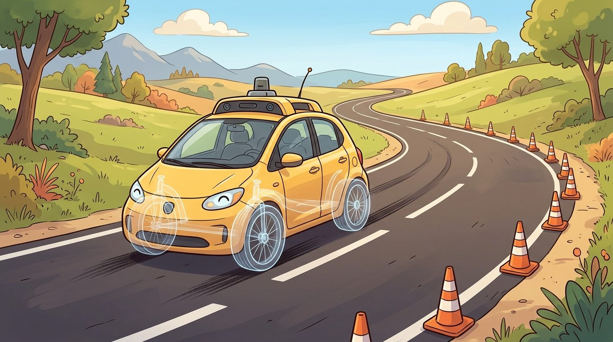
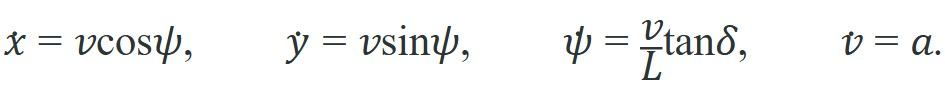
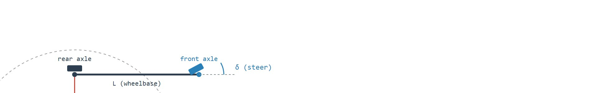

Geometry decides where the path goes; the tires, the friction circle, and the actuator limits decide whether the car can actually follow it.
On vehicle dynamics and control
At 80 km/h on a wet highway curve, a geometric planner declares the lane change safe. The tires disagree: the demanded lateral acceleration exceeds what friction can deliver, and the vehicle understeers into the adjacent lane (understeer means the front tires lose grip first, so the car turns less than the steering angle commands and drifts wide of the intended path). No perception failure, no planning logic error; just a model that forgot the car is a physical object with wheels on asphalt. This is the central tension of vehicle control in embodied AI. Every other robot arm or legged system shares the same problem, but a car at highway speed makes the consequences immediate and irreversible. Here you will build the kinematic and dynamic models that translate intentions into feasible trajectories, learn when each model breaks down, and connect MPC and LQR to the constraints that actually govern what a vehicle can and cannot do.

Figure 48.7A previews the theme of this section: a path that looks clean on a curvature map still has to clear the friction, speed, and actuator checks worked out below before a vehicle can actually drive it.
This section builds directly on the non-holonomic constraint introduced in section 5.2, the friction circle from section 6.3, and the LQR and MPC formulations in sections 7.4 and 7.5. The vehicle models and control choices developed here feed into route-level and behavior-level planning, which must respect exactly the curvature, friction, and actuator limits derived below.
Before a planner can turn a route into steering commands, it needs a model that relates the steering angle to the resulting path curvature and heading change. The simplest model that captures the non-holonomic constraint (the car cannot slide sideways) is the kinematic bicycle model: two axles collapsed to a single track, no tire slip, and no inertial forces. This is the right starting point because it is analytically tractable, requires only wheelbase and steering angle as parameters, and produces what is called the curvature-heading constraint envelope, the boundary that planners must respect even at low speed. With position $(x,y)$, heading $\psi$, speed $v$, wheelbase $L$, and steering angle $\delta$:


Figure 48.7B makes the curvature-heading relation concrete: the instantaneous center of rotation (ICR), the turn radius $R$, and the steering angle $\delta$ are the three quantities every planner must keep consistent with the wheelbase $L$. This model exposes non-holonomic motion and curvature limits. It is not enough for high-speed handling, but it is the right bridge between geometric planning and controller design.
A common error is to treat the kinematic bicycle model as a complete, general vehicle model. It is not. The model assumes zero tire slip and zero inertial forces. Those assumptions hold only at low speed on high-friction surfaces. Above roughly 30 km/h, on low-friction roads, or during evasive maneuvers, lateral tire forces, yaw inertia, and slip angles dominate. The kinematic model then produces trajectories the vehicle cannot physically track. Use the kinematic bicycle as a planning tool for curvature and heading feasibility at low speed. Treat it as a geometry tool, not a dynamics model. Validate every high-speed or safety-critical control decision against the dynamic bicycle model and the friction circle constraint.
A route polyline is not a drivable trajectory. The vehicle needs curvature, speed, acceleration, jerk, tire friction, and actuator limits that match the road and the platform.
Respecting curvature keeps the geometry drivable, but once speed enters the picture that same curvature demands lateral force the tires may not be able to supply, which is exactly the gap the dynamic model closes.
The dynamic bicycle model adds lateral velocity, yaw rate (the rate at which the vehicle's heading rotates about its vertical axis), tire slip (the difference between the tire's intended rolling direction and its actual travel direction, called the slip angle), and lateral tire forces. It earns its cost when speed, friction, braking, or evasive maneuvers dominate, because a planner blind to these effects picks trajectories that clear geometry but violate physics. The failure surfaces first at the friction circle: demanded lateral acceleration $a_y = v^2 \kappa$ exceeds what the tire-road pair delivers, so the "successful" geometric plan reaches the controller already broken.
A plan that satisfies geometry but violates the friction circle is not a plan; it is a collision waiting for the right road surface. The table below summarizes which vehicle model to reach for at each level of fidelity, and the failure that follows from using the wrong one.
State the model boundary explicitly. At low speeds and modest curvature, the kinematic bicycle model is often enough. At higher speeds, low friction, emergency braking, or evasive steering, tire slip angle, lateral stiffness, yaw inertia, and friction limits enter the planning problem. Consider the gap concretely. On dry asphalt at 60 km/h the friction circle allows roughly 0.8 g of lateral acceleration, but the same vehicle on wet asphalt has only about 0.3 g available. A geometric planner that computes curvature without checking this limit declares a lane change feasible, yet the dynamic model rejects it outright: $a_y = v^2\kappa$ already exceeds the wet-surface budget by nearly three times. Put differently, the same lane change that takes 4 seconds to complete safely on dry asphalt requires roughly 11 seconds on wet asphalt to stay inside the friction envelope, yet a purely geometric planner sees identical curvature in both cases and produces an identical, identically broken plan.
| Model | Best Use | Failure If Misused |
|---|---|---|
| Point mass | Coarse route timing and search | Ignores heading and steering |
| Kinematic bicycle | Lane following, parking, local paths | Misses tire saturation |
| Dynamic bicycle | Higher-speed maneuvers and stability | Requires tire and friction parameters |
| Full vehicle model | Validation and control calibration | Harder real-time optimization |
Once the right vehicle model is fixed, the remaining question is which controller consumes it, and the same fidelity ladder that ranked the models also ranks the controllers that ride on top of them.
Pure pursuit and Stanley control are useful geometric baselines, and a PID controller often closes the low-level speed loop beneath them. Linear Quadratic Regulator (LQR) and Model Predictive Control (MPC) expose the state-space and constrained-optimization view. MPC becomes especially important when the controller must trade route progress, comfort, lane keeping, collision margins, and actuator limits in one horizon.
The selection follows a simple ladder of complexity. Pure pursuit works well for low-speed paths (under roughly 20 km/h) where lookahead distance can be fixed; it needs only the current position and a target point on the path. Stanley adds a heading-error term and handles higher-speed lane following on highways, as demonstrated in the Stanford Racing 2005 DARPA Grand Challenge entry (the vehicle was named Stanley; the later 2007 Urban Challenge entry was Junior, which used a different controller architecture). LQR is appropriate when the deviation from a reference is small enough to linearize around, and the cost matrices can be tuned once offline. MPC is worth the added compute when constraints are hard: for example, a 60 km/h lane change on a wet road requires the controller to simultaneously respect a lateral-acceleration limit of roughly 0.3 g (compared to 0.8 g on dry asphalt), a steering-rate limit, and a preview of the upcoming curve, none of which fit a single-step feedback law.
Input: reference path $\mathbf{r}(t)$, vehicle state $(x, y, \psi, v)$, wheelbase $L$, friction limit $\mu$, prediction horizon $N$, timestep $\Delta t$, steering-rate limit $\dot\delta_{\max}$
Output: control sequence $\{(\delta_k, a_k)\}_{k=0}^{N-1}$ satisfying dynamics, comfort, and friction constraints, or infeasibility flag
So far: the algorithm has linearized the vehicle model around the current state, propagated it forward across the horizon, and checked the resulting lateral acceleration against the friction circle and the steering-rate limit at every step; what remains is turning those checks into an optimization problem and solving it.
The receding-horizon principle is like a hiking guide checking the trail ahead at every bend rather than memorizing the full route map at the trailhead. Before each step she looks as far as her visibility allows, picks the best next footfall, takes it, then looks again from the new vantage point. She never commits to a footfall sequence planned from a position she no longer occupies. The map she consulted two bends ago showed dry rock, but the rock ahead is now wet; by re-evaluating at each step she catches that change before it causes a slip, not after.
When tuning an MPC controller for lane changes, set the prediction horizon to cover at least the full maneuver duration plus one braking distance at the target speed. A horizon shorter than the lane-change geometry forces the optimizer to act as if the curve ahead does not exist, so constraint violations appear at the end of the maneuver rather than being avoided from the start. For a 60 km/h lane change lasting roughly 4 seconds, a 5-second horizon (50 steps at 0.1 s) is a practical minimum; shorter horizons systematically underestimate the peak lateral acceleration and cause the solver to return plans that saturate the friction circle mid-maneuver. The N parameter in do-mpc and Acados follows this convention directly.
# Kinematic bicycle rollout for a local planner sanity check.
# Roll out a constant-curvature lane-following segment.
# Use the result to sanity-check heading and path change before simulator runs.
import math
x, y, psi, v = 0.0, 0.0, 0.0, 8.0
L, dt = 2.8, 0.1
for _ in range(20):
delta = math.radians(5.0)
x += v * math.cos(psi) * dt
y += v * math.sin(psi) * dt
psi += (v / L) * math.tan(delta) * dt
print(round(x, 2), round(y, 2), round(math.degrees(psi), 2))Trace the first three timesteps of the rollout with concrete numbers. Start state $(x,y,\psi,v) = (0, 0, 0, 8.0)$, wheelbase $L = 2.8$ m, steering $\delta = 5° = 0.0873$ rad, $\Delta t = 0.1$ s. Note $\tan(0.0873) = 0.0875$, so $\dot\psi = (v/L)\tan\delta = (8.0/2.8)(0.0875) = 0.250$ rad/s.
Step 1 (from $\psi = 0$): $x \mathrel{+}= 8.0\cos(0)(0.1) = 0.800$; $y \mathrel{+}= 8.0\sin(0)(0.1) = 0.000$; $\psi \mathrel{+}= 0.250(0.1) = 0.0250$ rad ($1.43°$). State: $(0.800,\ 0.000,\ 0.0250)$.
Step 2 (from $\psi = 0.0250$): $x \mathrel{+}= 8.0\cos(0.0250)(0.1) = 0.800$; $y \mathrel{+}= 8.0\sin(0.0250)(0.1) = 0.0200$; $\psi \mathrel{+}= 0.0250 \to 0.0500$ rad ($2.86°$). State: $(1.600,\ 0.0200,\ 0.0500)$.
Step 3 (from $\psi = 0.0500$): $x \mathrel{+}= 8.0\cos(0.0500)(0.1) = 0.799$; $y \mathrel{+}= 8.0\sin(0.0500)(0.1) = 0.0400$; $\psi \mathrel{+}= 0.0250 \to 0.0750$ rad ($4.30°$). State: $(2.399,\ 0.0600,\ 0.0750)$.
Heading climbs by a fixed $1.43°$ each step (constant curvature), while lateral $y$ grows quadratically as the accumulating heading tips more of the velocity sideways. After 20 steps this compounds to the printed $(15.61,\ 3.90,\ 28.66°)$, a shallow arc, not a sideways jump.
Expected output: the final heading should increase smoothly and the lateral displacement should stay consistent with a shallow arc rather than a sudden sideways jump. If the numbers imply an unrealistically sharp turn for the chosen steering angle and speed, the planner, units, or wheelbase model is inconsistent before closed-loop evaluation even starts.
Use CommonRoad for motion-planning scenarios, CARLA for closed-loop simulation, ROS 2 for stack integration, and vehicle-dynamics libraries or simulator models when tire forces, stability, latency, actuator limits, and parameter identification matter.
A path can be collision-free in geometry while being unsafe in dynamics. Low friction, high speed, tire saturation, or actuator delay can invalidate the plan after the planner has already declared success.
For a lane-change planner, compare the same path under dry asphalt and low-friction road assumptions. The useful metric combines lateral error with yaw rate, jerk, tire margin, controller saturation, and the fraction of the horizon that remains inside the vehicle's admissible acceleration envelope.
The open-source Autoware autonomous-driving stack ships an MPC lateral controller (mpc_lateral_controller) that linearizes a kinematic-then-dynamic bicycle model around the reference path and solves a QP every cycle, exactly the receding-horizon loop in Algorithm 48.7. It blends a kinematic model at low speed with a dynamic bicycle model carrying tire cornering stiffness above a configurable speed threshold, so the same controller stays stable from parking-lot crawl to highway merge. Autoware Foundation reference vehicles typically use this controller for closed-loop lane keeping, and it has been adopted in some production fleets, though exact deployment scope varies by integrator.
For vehicle kinematics, dynamics, and control, the useful test is simple: could a teammate point to the log line, plot, or trace that proves the idea changed the agent's next action?
Physics-constrained end-to-end control (2024-2026). End-to-end networks such as those in the Wayve LINGO-2 system and similar vision-language-action architectures output steering and throttle commands directly from camera tokens, bypassing explicit bicycle-model layers. The open problem is that the training objective has no term that penalizes friction-circle violations. Recent work addresses this by projecting network outputs onto the feasible set $\sqrt{a_y^2 + a_x^2} \leq \mu g$ inside a differentiable safety layer before the actuator command is emitted. DriveDreamer-2 (Wen et al., 2024, arXiv 2403.06845) shows that world-model rollouts can generate constraint-aware training data at scale, coupling the generative model to explicit vehicle dynamics so that sampled trajectories respect curvature and friction budgets.
Uncertainty-aware MPC with learned tire models (2024-2026). Classical MPC uses a fixed friction coefficient $\mu$, but real surfaces vary continuously. Groups at ETH Zurich (Hewing et al., ongoing) and TU Delft are training Gaussian-process or neural ODE tire models that supply online uncertainty estimates to the MPC constraint set, tightening the friction-circle bound when confidence is low and relaxing it on dry pavement. This direction bridges data-driven learning and formal constraint satisfaction without discarding the bicycle-model structure.
Foundation models as trajectory priors for constrained planners (2025-2026). Large pre-trained motion transformers (for example, the Waymo Motion Transformer, WOMD 2024 entries) are now being used as proposal distributions inside an outer MPC or sampling-based planner. The foundation model supplies diverse candidate trajectories; the outer loop filters them against the kinematic bicycle model and friction-circle constraint before execution. This decouples creative trajectory generation from constraint satisfaction and appears to be an active design pattern in industry research groups including Waymo and Motional, and in the nuPlan 2024 challenge top entries.
How confident should a controller be in a friction coefficient it has never actually measured on this road, at this temperature, on these tires? That uncertainty is precisely what current approaches leave underspecified.
Open problem for PhD research. None of the above approaches fully solve the sim-to-real gap in tire-constraint tightness: a constraint that is empirically tight on the test vehicle's rubber compound at 20 degrees Celsius may be dangerously loose on a different compound or at 5 degrees. A tractable PhD contribution would be an online Bayesian estimator that continuously identifies the effective $\mu$ from IMU and wheel-speed signals during normal driving, propagates uncertainty into the MPC constraint horizon, and triggers a conservative fallback plan when posterior variance exceeds a threshold, with formal bounds on the probability that the friction circle is violated before the next re-estimation step.
Can you explain when a kinematic bicycle model is sufficient, when tire dynamics matter, and which metric would reveal the difference?
Implement pure pursuit and MPC for the same lane-change path. Compare lateral error, curvature, jerk, actuator saturation, and time-to-collision margin under dry and low-friction conditions.
Goal: see empirically where the kinematic bicycle model diverges from the dynamic model, and how the friction circle sets the boundary.
Tools: Python with NumPy and Matplotlib only (no simulator needed). Optionally CARLA or the highway-env Gymnasium package if you want closed-loop visuals.
Setup: implement two single-track models side by side: (1) the kinematic bicycle from the equations above, and (2) a dynamic bicycle with lateral velocity, yaw rate, and a linear tire model (cornering stiffness, the lateral force a tire generates per radian of slip angle, $C_\alpha \approx 80{,}000$ N/rad front and rear, mass $m = 1500$ kg, $L_f = L_r = 1.4$ m, yaw inertia, the vehicle's rotational resistance about its vertical axis, $I_z = 2250$ kg m$^2$). Command a constant steering angle of $5°$ and integrate both at $\Delta t = 0.01$ s for 3 seconds.
What to vary: sweep speed $v$ across 5, 15, 30, 45, and 60 km/h. At each speed, also recompute the demanded lateral acceleration $a_y = v^2\kappa$ and compare it against a friction budget $\mu g$ for $\mu = 0.8$ (dry) and $\mu = 0.3$ (wet).
What to observe: plot the trajectory $(x,y)$ from both models on the same axes. Below about 30 km/h the two paths overlap almost perfectly. As speed rises, the dynamic model's path bulges outward (the tires cannot supply the demanded lateral force, slip angle grows, and the car understeers) while the kinematic model keeps tracing its clean geometric arc. Mark the speed at which $a_y$ first crosses the wet-surface budget of $0.3g \approx 2.94$ m/s$^2$: that crossing is the point where the kinematic plan becomes a physically unfollowable lie. Expect divergence to become visually obvious right around where the friction circle saturates.
Driving control becomes embodied when the planned path, vehicle model, tire limits, actuator delays, and safety margins are evaluated together.
Kinematic bicycle lane-follower in Gymnasium (beginner, weekend): Build a discrete-time kinematic bicycle environment using Gymnasium and implement a pure-pursuit controller that keeps a simulated car within lane boundaries on a circular track. The key challenge is converting a geometric lookahead point into a steering angle and verifying that the resulting heading error stays bounded across a full lap.
MPC lane-change feasibility checker with friction-circle constraints (intermediate, 1 to 2 weeks): Use do-mpc or Acados to implement the MPC trajectory feasibility check from Algorithm 48.7, parameterizing the friction limit so the same controller runs on dry-asphalt (0.8 g) and wet-road (0.3 g) surface profiles. The key challenge is encoding the friction-circle inequality as a nonlinear constraint inside the solver and comparing the resulting steering-rate profiles between the two surface conditions to confirm that constraint tightening is reflected in the planned curvature.
Dynamic bicycle model validation in CARLA (intermediate, 1 to 2 weeks): Integrate a ROS 2 node that publishes a dynamic bicycle model state estimate alongside CARLA ground-truth telemetry, then log the slip-angle divergence at 60 km/h through a curve on both dry and wet virtual road surfaces. The key challenge is synchronizing the model state with CARLA sensor timestamps at 0.1 s resolution and confirming that slip angle visibly separates from the kinematic bicycle prediction once lateral acceleration exceeds roughly 0.4 g.
CommonRoad. https://commonroad.in.tum.de/
Motion-planning scenario and benchmark framework.
CARLA Simulator. https://carla.org/
Open autonomous driving simulator for development, training, and validation.
TUM autonomous vehicles motion planning course. https://www.mos.ed.tum.de/en/avs/teaching/autonomous-vehicles-motion-planning-decision-making/
Course reference for graph-based planning, game-theoretic approaches, and RL in AV decision making.
Paden et al. "A Survey of Motion Planning and Control Techniques for Self-driving Urban Vehicles." https://arxiv.org/abs/1604.07446
Reference survey for planning and control in autonomous urban driving.
Rajamani. "Vehicle Dynamics and Control." https://books.google.pl/books/about/Vehicle_Dynamics_and_Control.html?id=eoy19aWAjBgC&redir_esc=y
Textbook reference for vehicle dynamics, tire models, and control.